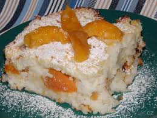

Jemný rýžový nákyp s kompotovaným ovocem a rozinkami, pečený do zlatova.
Pekáč vymažeme máslem.
Rýži propláchneme vodou, scedíme a uvaříme v osladěném a lehce osoleném mléce.
Žloutky oddělíme od bílků a z bílků vyšleháme pevný sníh.
Uvařenou rýži vyklopíme do mísy, vmícháme za tepla máslo. Po vychladnutí přidáme žloutky a nakonec lehce vmícháme sníh z bílků.
Polovinu hmoty rozprostřeme do pekáče, na ni naskládáme kompotované ovoce, přidáme hrst rozinek a přikryjeme druhou polovinou rýže.
Pekáč přiklopíme a pečeme v troubě rozehřáté na 180 °C asi 50 minut. Ke konci pečení odkryjeme a dopečeme dozlatova.